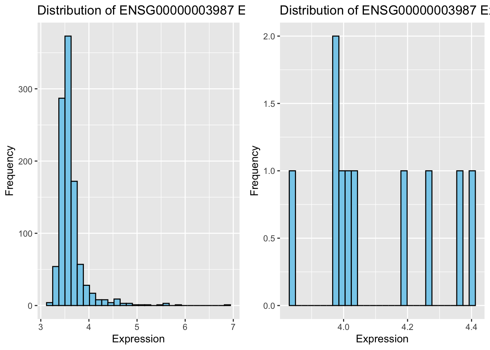
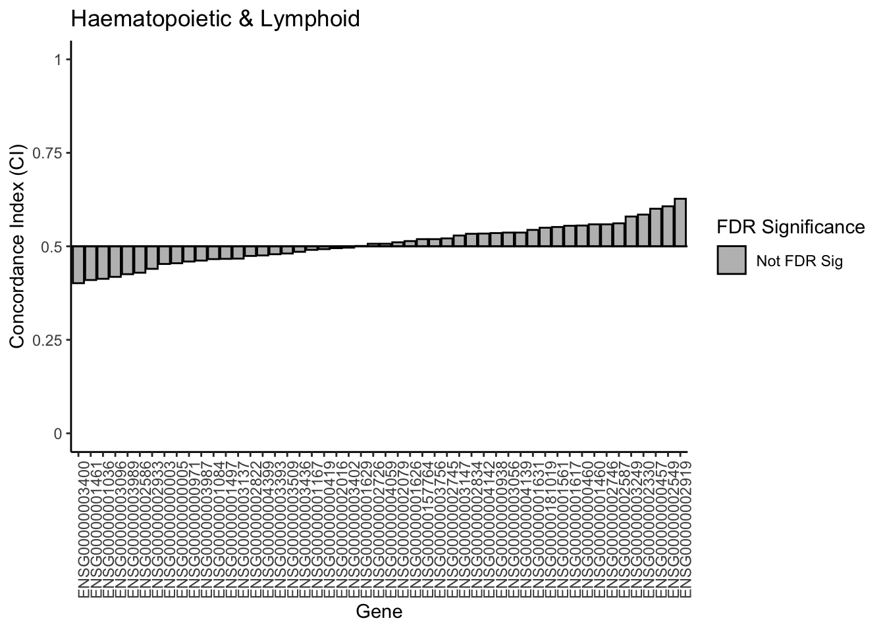

Module 4: Pharmacogenomics for Biomarker Discovery - Advanced Analysis
Lab
Overview
Intructor(s) Name and Contact Information
- Nikta Feizi nikta.feizi@uhn.ca
- Julia Nguyen julia.nguyen@uhn.ca
Introduction
This workshop will touch on more advanced statistical methods for univariate biomarker discovery. It will primarily cover meta-analysis techniques and sub-group analysis.
Learning Objectives
By the end of this lab, participants will be able to:
- Execute a meta-analysis using multiple PharmacoSets to evaluate a biomarker of interest across different cancer types
- Generate and interpret forest plots to visualize effect sizes
- Perform subgroup analyses using a small subset of the CCLE dataset
- Understand the preprocessing steps required for pharmacogenomic data
- Assess the assumptions and model diagnostics for linear regression models
Data Acquisition and Preparation
Like before, we will use smaller versions of the PharmacoSets for the workshop to minimize processing time. Let’s load these datasets in and subset for common cell lines and .
Extracting Required Vectors for Biomarker Analysis
Recall there are two components needed for a biomarker association analysis:
- Feature data (molecular profile)
- Drug response
Say we are interested in ENSG00000003987 expression association with PD-0325901. We can start by extracting this data from both PSets.
Gene Expression Data
# specify our gene of interest
gene <- "ENSG00000003987"
# extract the RNA-Seq data for our gene of interest in both GDSC and CCLE
ccle_rna_data <- summarizeMolecularProfiles(
CCLEsmall,
mDataType = "rna", features = gene
) |> assay()
gdsc_rna_data <- summarizeMolecularProfiles(
GDSCsmall,
mDataType = "rna", features = gene
) |> assay()
#> | | | 0% | |======================================================================| 100%
gdsc_rna_data
#> 22RV1 23132-87 380 5637 639-V 647-V 697
#> ENSG00000003987 4.197327 4.022529 4.000509 4.031896 3.977781 3.834624 4.36307
#> 769-P 786-0 8-MG-BA
#> ENSG00000003987 4.397028 3.973001 4.275385Drug Response Data
Next, let’s take a look at the available drug response data
sensitivityProfiles(CCLEsmall) |> head()
#> ic50_published auc_published amax_published
#> drugid_AEW541_1321N1 8.000000 0.0873750 -42.55801
#> drugid_AEW541_22Rv1 2.329924 0.2205000 -71.58934
#> drugid_AEW541_42-MG-BA 2.682130 0.1144375 -63.49137
#> drugid_AEW541_5637 5.002314 0.1243550 -62.35278
#> drugid_AEW541_639-V 1.736181 0.1936250 -51.95981
#> drugid_AEW541_697 4.260822 0.1087625 -73.33379
#> auc_recomputed ic50_recomputed amax_recomputed
#> drugid_AEW541_1321N1 0.1017047 13.09700 42.87563
#> drugid_AEW541_22Rv1 0.2239774 2.18654 70.37213
#> drugid_AEW541_42-MG-BA 0.1215999 2.68981 63.00413
#> drugid_AEW541_5637 0.1092448 5.19939 61.43152
#> drugid_AEW541_639-V 0.1912847 5.40523 54.22604
#> drugid_AEW541_697 0.1146054 4.17688 69.94055We can see a few options of drug response metrics to choose from. We will use auc_published for our drug response associations.
# extract AUC_published data from CCLE and GDSC
ccle_auc <- summarizeSensitivityProfiles(
CCLEsmall,
sensitivity.measure = "auc_published",
summary.stat = "median",
verbose = FALSE
)
gdsc_auc <- summarizeSensitivityProfiles(
GDSCsmall,
sensitivity.measure = "auc_published",
summary.stat = "median",
verbose = FALSE
)
ccle_auc[1:5,1:5]
#> 1321N1 143B 22RV1 23132-87 253J-BV
#> PD-0325901 0.1148875 NA 0.385000 NA NA
#> 17-AAG 0.4177000 NA 0.372460 NA NA
#> AEW541 0.0873750 NA 0.220500 NA NA
#> Nilotinib NA NA 0.000000 NA NA
#> PHA-665752 0.0333750 NA 0.094375 NA NAThe summarizeSensitivityProfiles() function nicely pulls the drug response data and converts it into a sample~drug matrix for easy use.
We only need the drug response data for PD-0325901, so let’s pull that out.
drug <- "PD-0325901"
ccle_drug_data <- ccle_auc[drug, ]
gdsc_drug_data <- gdsc_auc[drug, ]
head(ccle_drug_data)
#> 1321N1 143B 22RV1 23132-87 253J-BV 253J
#> 0.1148875 NA 0.3850000 NA NA NA
head(gdsc_drug_data)
#> 22RV1 23132-87 380 5637 639-V 647-V
#> 0.029649 0.122911 NA 0.007242 0.279261 0.100351Gene Expression Exploratory Data Analysis (EDA)
Before performing the statistical analysis, let’s quickly look at the distribution of ENSG00000003987 expression data.
First, we can check the number of cell lines in each vector:
paste("Number of cell lines in GDSC:", length(gdsc_rna_data))
#> [1] "Number of cell lines in GDSC: 10"
paste("Number of cell lines in CCLE:", length(ccle_rna_data))
#> [1] "Number of cell lines in CCLE: 1061"Notice there is a large difference between the number of samples between GDSC and CCLE. This difference in sample size may reflected in the meta-analysis.
Let’s quickly look at the distribution of this gene in both PSets.
p1 <- ggplot(data = t(ccle_rna_data), aes_string(x = gene)) +
geom_histogram(bins = 30, fill = "skyblue", color = "black") +
labs(
title = stringr::str_c("Distribution of ", gene, " Expression in CCLEsmall"),
x = "Expression", y = "Frequency"
)
p2 <- ggplot(data = t(gdsc_rna_data), aes_string(x = gene)) +
geom_histogram(bins = 30, fill = "skyblue", color = "black") +
labs(
title = stringr::str_c("Distribution of ", gene, " Expression in GDSCsmall"),
x = "Expression", y = "Frequency"
)
ggarrange(p1, p2, ncol = 2)
Notice that the difference in distribution shapes. You can imagine what implications a small sample size (e.g. GDSC) would have when downstream analysis.
Effect Size Calculation
In this next section, we will compute the associations between our feature and drug within each individual PSet. These results will be what we input into the meta-analysis.
Before we start, let’s confirm that the samples in our input ENSG00000003987 expression and PD-0325901 response vectors are in the samae order.
table(names(gdsc_drug_data) == colnames(gdsc_rna_data))
#>
#> TRUE
#> 10
table(names(ccle_drug_data) == colnames(ccle_rna_data))
#>
#> TRUE
#> 1061
# manually look at the cell line names
names(gdsc_drug_data)
#> [1] "22RV1" "23132-87" "380" "5637" "639-V" "647-V"
#> [7] "697" "769-P" "786-0" "8-MG-BA"
colnames(gdsc_rna_data)
#> [1] "22RV1" "23132-87" "380" "5637" "639-V" "647-V"
#> [7] "697" "769-P" "786-0" "8-MG-BA"We can use any of the statistical methods discussed in Module 3 to calculate theeffect size of the association between ENSG00000003987 expression and PD-0325901 response.
Let’s try using concordance index:
# fixing drug response data (to change in subsetted PSet)
gdsc_drug_data[3] <- 0.1
# compute concordance index for each pset
CCLE_ci <- survcomp::concordance.index(
as.numeric(ccle_drug_data), # drug vector
surv.time = as.numeric(ccle_rna_data), # gene vector
surv.event = rep(1,length(ccle_rna_data)),
outx = TRUE, method="noether", na.rm = TRUE
)
cat("Concordance Index:", CCLE_ci$c.index, "\n",
"P-value:", CCLE_ci$p.value, "\n",
"Standard Error:", CCLE_ci$se, "\n",
"Upper CI:", CCLE_ci$upper,"\n",
"Lower CI:", CCLE_ci$lower)
#> Concordance Index: 0.5352986
#> P-value: 0.01556791
#> Standard Error: 0.0145929
#> Upper CI: 0.5639002
#> Lower CI: 0.5066971
GDSC_ci <- survcomp::concordance.index(
as.numeric(gdsc_drug_data), # drug vector
surv.time = as.numeric(gdsc_rna_data), # gene vector
surv.event = rep(1,length(gdsc_rna_data)),
outx = TRUE, method="noether", na.rm = TRUE
)
cat("Concordance Index:", GDSC_ci$c.index, "\n",
"P-value:", GDSC_ci$p.value, "\n",
"Standard Error:", GDSC_ci$se, "\n",
"Upper CI:", GDSC_ci$upper,"\n",
"Lower CI:", GDSC_ci$lower)
#> Concordance Index: 0.5777778
#> P-value: 0.08389382
#> Standard Error: 0.04499657
#> Upper CI: 0.6659694
#> Lower CI: 0.4895861Perform Meta-Analysis
Now we can combine the effect sizes from GDSCsmall and CCLEsmall to perform a meta-analysis.
Recall from the lecture that we need three variables for our meta-analysis:
- Effect Size (also called Treatment Effect or TE)
- Standard Error
- Dataset Labels (just for plotting purposes)
Let’s extract all of this information from our outputs above and put it into a dataframe.
combined <- data.frame(
Concordance.Index = c(GDSC_ci$c.index, CCLE_ci$c.index),
Standard.Error = c(GDSC_ci$se, CCLE_ci$se),
Upper.CI = c(GDSC_ci$upper, CCLE_ci$upper),
Lower.CI = c(GDSC_ci$lower, CCLE_ci$lower),
Dataset = c("GDSC", "CCLE")
)
combined
#> Concordance.Index Standard.Error Upper.CI Lower.CI Dataset
#> 1 0.5777778 0.04499657 0.6659694 0.4895861 GDSC
#> 2 0.5352986 0.01459290 0.5639002 0.5066971 CCLENow we can use the metagen function from the meta package to perform the meta-analysis.
meta.result <- metagen(data = combined,
TE = Concordance.Index,
seTE = Standard.Error,
studlab = combined$Dataset
)
meta.result
#> Number of studies: k = 2
#>
#> 95%-CI z p-value
#> Common effect model 0.5393 [0.5121; 0.5665] 38.85 0
#> Random effects model 0.5393 [0.5121; 0.5665] 38.85 0
#>
#> Quantifying heterogeneity:
#> tau^2 = 0; tau = 0; I^2 = 0.0%; H = 1.00
#>
#> Test of heterogeneity:
#> Q d.f. p-value
#> 0.81 1 0.3692
#>
#> Details of meta-analysis methods:
#> - Inverse variance method
#> - Restricted maximum-likelihood estimator for tau^2
#> - Calculation of I^2 based on QVisualization with Forest Plots
Forest Function from Meta Package
We can use the built in forest function from the meta package to quickly create a forest plot using the output of the metagen function:
# set your file path
file_path <- "forest_plot.png"
# generate forest plot
png(file = file_path, width = 10, height = 4, res = 600, units = "in")
forest(meta.result)
dev.off()
#> quartz_off_screen
#> 2###### Using ggplot2
We can also visualize this data usign the ggplot2 package. While this will not return a full forest plot, we can get a closer look at the relationship between the effect sizes of each individual dataset and the meta-estimate.
ggplot(combined, aes(x = Concordance.Index, y = Dataset)) +
geom_point(size = 3) +
geom_errorbarh(aes(xmin = Lower.CI, xmax = Upper.CI), height = 0.2) +
geom_vline(xintercept = meta.result$TE.random, linetype = "dashed", color = "red") +
labs(
title = "Meta-Analysis of GeneX Expression and Drug Response",
x = "Effect Size",
y = "Study"
) +
theme_minimal()
In the plot above, we have each data point representing the individual dataset effect sizes, the error bars represents the confidence interval, and the vertical line representing the meta-analysis treatment estimate.
We can very clearly see that the red line is closer to the CCLE data point compared to the GDSC data point. This is reflective of the CCLE having a greater weight dueto a lower variance among other considerations.
Subgroup Analysis
We will now conduct a tissue-subgroup analysis using a subset of the CCLEsmall dataset, using all the steps that we have learned from this workshop.
We will be looking at the response of RNA-Seq data on AUC drug response. We will take a discovery approach, looking for any associations in our rich dataset.
Data Preparation
Let’s start by loading in and looking at our data.
# load in expression data
expr <- summarizeMolecularProfiles(CCLEsmall, mDataType='rna') |> assay()
expr[1:5,1:5]
#> 1321N1 143B 22RV1 23132-87 253J-BV
#> ENSG00000181019 10.907043 9.773744 8.907329 13.961104 12.258347
#> ENSG00000157764 7.072053 6.553047 7.237172 7.462726 7.190695
#> ENSG00000000003 4.052251 10.542824 7.951917 8.079243 10.079808
#> ENSG00000000005 3.430694 3.585748 3.524705 3.580134 3.651864
#> ENSG00000000419 13.477683 12.891333 12.043700 12.200771 12.133981
# load in drug response data
auc <- summarizeSensitivityProfiles(
CCLEsmall,
sensitivity.measure = "auc_published",
summary.stat = "median",
verbose = FALSE
)
auc[1:5,1:5]
#> 1321N1 143B 22RV1 23132-87 253J-BV
#> PD-0325901 0.1148875 NA 0.385000 NA NA
#> 17-AAG 0.4177000 NA 0.372460 NA NA
#> AEW541 0.0873750 NA 0.220500 NA NA
#> Nilotinib NA NA 0.000000 NA NA
#> PHA-665752 0.0333750 NA 0.094375 NA NAWe have our RNA-Seq expression and drug response matrix in the feature~sample format.
Next, let’s load in the metadata for the cell lines.
# load in metadata
meta <- CCLEsmall@molecularProfiles[["rna"]] |> colData()
colnames(meta)
#> [1] "samplename" "filename"
#> [3] "chiptype" "hybridization.date"
#> [5] "hybridization.hour" "file.day"
#> [7] "file.hour" "batch"
#> [9] "sampleid" "CCLE.name"
#> [11] "Cell.line.primary.name" "Cell.line.aliases"
#> [13] "Gender" "Site.Primary"
#> [15] "Histology" "Hist.Subtype1"
#> [17] "Notes" "Source"
#> [19] "Expression.arrays" "SNP.arrays"
#> [21] "Oncomap" "Hybrid.Capture.Sequencing"
#> [23] "batchid" "rownames"Since we want to do a tissue subgroup analysis, we need to identify the variable that gives us the tissue type for each cell line.
We also need to find the variable that maps to the column names of our expr matrix. Then, we make sure that all our samples are present in this metadata
# show needed column names
meta[,c('Cell.line.primary.name', 'Site.Primary')] |> head()
#> DataFrame with 6 rows and 2 columns
#> Cell.line.primary.name
#> <character>
#> NIECE_P_NCLE_RNA3_HG-U133_PLUS_2_B06_296024 1321N1
#> MAKER_P_NCLE_RNA7_HG-U133_PLUS_2_F09_454702 143B
#> NIECE_P_NCLE_RNA3_HG-U133_PLUS_2_F06_296120 22Rv1
#> WATCH_P_NCLE_RNA8_HG-U133_PLUS_2_E11_474718 23132/87
#> CRAZY_P_NCLE_RNA10_HG-U133_PLUS_2_A05_569490 253J-BV
#> CRAZY_P_NCLE_RNA10_HG-U133_PLUS_2_A03_569510 253J
#> Site.Primary
#> <character>
#> NIECE_P_NCLE_RNA3_HG-U133_PLUS_2_B06_296024 central_nervous_system
#> MAKER_P_NCLE_RNA7_HG-U133_PLUS_2_F09_454702 bone
#> NIECE_P_NCLE_RNA3_HG-U133_PLUS_2_F06_296120 prostate
#> WATCH_P_NCLE_RNA8_HG-U133_PLUS_2_E11_474718 stomach
#> CRAZY_P_NCLE_RNA10_HG-U133_PLUS_2_A05_569490 urinary_tract
#> CRAZY_P_NCLE_RNA10_HG-U133_PLUS_2_A03_569510 urinary_tract
# check for cell lines included in metadata
colnames(expr) %in% meta$Cell.line.primary.name |> table()
#>
#> FALSE TRUE
#> 125 936Notice we have some cell lines not included in the metadata. We will want to remove these samples from our analysis as we cannot give them a tissue label.
# identify cell lines with both expression and metadata
commonCells <- intersect(colnames(expr), meta$Cell.line.primary.name)
paste("Number of common cell lines:", length(commonCells))
#> [1] "Number of common cell lines: 936"
# check that all these cell lines also have drug response data
commonCells %in% colnames(auc) |> table()
#>
#> TRUE
#> 936
# subset metadata to only include these samples
meta <- meta[meta$Cell.line.primary.name %in% commonCells,]
dim(meta)
#> [1] 936 24There were 936 cell lines with all RNA-Seq expression, drug response, and metadata. We only keep the metadata for these cell lines.
Next, let’s take a look at the tissue types available within the samples we have.
meta$Site.Primary |> table()
#>
#> autonomic_ganglia biliary_tract
#> 15 7
#> bone breast
#> 26 56
#> central_nervous_system endometrium
#> 59 24
#> haematopoietic_and_lymphoid_tissue kidney
#> 168 32
#> large_intestine liver
#> 52 26
#> lung oesophagus
#> 175 26
#> ovary pancreas
#> 47 38
#> pleura prostate
#> 10 5
#> salivary_gland skin
#> 1 55
#> soft_tissue stomach
#> 20 31
#> thyroid upper_aerodigestive_tract
#> 11 29
#> urinary_tract
#> 23We have a large range of different tissue types represented in our CCLE dataset. Let’s select haematopoietic_and_lymphoid_tissue and lung tissues as they have the largest sample sizes.
Let’s subset our PSets for each of these tissue types.
# get cell lines from each tissue
lymp_cells <- meta$Cell.line.primary.name[meta$Site.Primary == "haematopoietic_and_lymphoid_tissue"]
lung_cells <- meta$Cell.line.primary.name[meta$Site.Primary == "lung"]
# subset psets to only include cells within each tissue group
lymp_pset <- subsetTo(CCLEsmall, cells = lymp_cells)
lung_pset <- subsetTo(CCLEsmall, cells = lung_cells)
# quickly check dimensions of the assays in our subsetted psets
assay(summarizeMolecularProfiles(lymp_pset, mDataType='rna')) |> dim()
#> [1] 50 168All our molecular profiles and drug response data within each tissue-specific pset is now subsetted to only include the cell lines that are in the respective tissue.
Statistical Analysis to Measure Drug Response Associations
Let’s say we want to discover a gene (biomarker) that is predictive of response to the drug lapatinib. To do that, we will compute the association between the expression of each gene to the lapatinib drug response.
First, let’s get our assays:
# extract the expression assays
lymp_expr <- assay(summarizeMolecularProfiles(lymp_pset, mDataType='rna'))
lung_expr <- assay(summarizeMolecularProfiles(lung_pset, mDataType='rna'))
# extract the drug response assays
lymp_auc <- summarizeSensitivityProfiles(lymp_pset, sensitivity.measure = "auc_published",
summary.stat = "median", verbose = FALSE)
lung_auc <- summarizeSensitivityProfiles(lung_pset, sensitivity.measure = "auc_published",
summary.stat = "median", verbose = FALSE)
# extract just the drug response vector for lapatinib
drug <- "lapatinib"
lymp_auc <- lymp_auc[drug,]
lung_auc <- lung_auc[drug,]
# quickly view the data
lymp_expr[1:5,1:5]
#> 697 ALL-SIL AML-193 AMO-1 BCP-1
#> ENSG00000181019 6.609914 7.032188 7.637502 9.810762 10.006768
#> ENSG00000157764 7.754090 7.138147 7.228066 8.115521 7.197811
#> ENSG00000000003 4.509136 4.072092 3.937972 5.118464 3.846667
#> ENSG00000000005 3.736073 3.661470 3.770592 3.803109 3.660946
#> ENSG00000000419 11.718635 11.769529 12.287833 12.586162 11.837654
lymp_auc[1:5]
#> 697 ALL-SIL AML-193 AMO-1 BCP-1
#> 0.0453250 0.0767875 NA 0.0663875 NAThe PSet has already ensured that the cell line order between the RNA-Seq expression matrix and the drug response vector is the same. Don’t forget to always check when working with your own data.
Now we will have to compute the association between each gene to lapatinib. We can use a for loop to quickly do this:
# create data frame to hold results
results <- as.data.frame(matrix(data = NA, nrow = 0, ncol = 7))
colnames(results) <- c("gene", "drug", "ci", "pvalue", "se", "upper", "lower")
# get the number of genes (features)
num_genes <- nrow(lymp_expr)
# loop through every gene to compute concordance index to drug responses
for (gene in rownames(lymp_expr)) {
# compute concordance index
ci <- survcomp::concordance.index(
as.numeric(lymp_auc), # drug vector
surv.time = as.numeric(lymp_expr[gene,]), # gene vector
surv.event = rep(1,length(lymp_expr[gene,])),
outx = TRUE, method="noether", na.rm = TRUE
)
# extract summary statistics
gene_result <- data.frame(gene, drug,
ci = ci$c.index,
pvalue = ci$p.value,
se = ci$se,
upper = ci$upper,
lower = ci$lower)
# merge with results dataframe
results <- rbind(results, gene_result)
}
# filtering and multiple test correction
results <- results[complete.cases(results$pvalue),]
results$FDR <- p.adjust(results$pvalue, method = "BH", n = length(results$pvalue))
results |> head()
#> gene drug ci pvalue se upper lower
#> 1 ENSG00000181019 lapatinib 0.5497723 0.30681314 0.04870411 0.6452306 0.4543140
#> 2 ENSG00000157764 lapatinib 0.5191932 0.72503712 0.05456734 0.6261432 0.4122432
#> 3 ENSG00000000003 lapatinib 0.4528302 0.38826533 0.05467268 0.5599867 0.3456737
#> 4 ENSG00000000005 lapatinib 0.4547820 0.37310423 0.05076826 0.5542860 0.3552781
#> 5 ENSG00000000419 lapatinib 0.4925179 0.86910085 0.04540095 0.5815021 0.4035337
#> 6 ENSG00000000457 lapatinib 0.6005205 0.06179093 0.05381779 0.7060014 0.4950396
#> FDR
#> 1 0.8522587
#> 2 0.9062964
#> 3 0.8688491
#> 4 0.8688491
#> 5 0.9516488
#> 6 0.7079522Notice at the end we also computed the false discovery rate (FDR) which is a method for multiple test correction.
We would have to repeat this code for every tissue type. Although we are only working with two, imagine we wanted to do more tissue types in the future.
Function for computing concordance index
To simply this, we can turn the code above into a function such that we just have to input the expression matrix and drug response vector to get our result without having to change the rest of the code.
Below is a function named compute_CI which takes two arguments:
expr: an expression matrix with features as rows and samples as columnsdrug_vector: a vector of drug response in the same order as the samples in exprdrug: string name of drug (just for putting in the results dataframe)
compute_CI <- function(expr, drug_vector, drug) {
# create data frame to hold results
results <- as.data.frame(matrix(data = NA, nrow = 0, ncol = 7))
colnames(results) <- c("gene", "drug", "ci", "pvalue", "se", "upper", "lower")
# get the number of genes (features)
num_genes <- nrow(expr)
# loop through every gene to compute concordance index to drug responses
for (gene in rownames(expr)) {
# compute concordance index
ci <- survcomp::concordance.index(
as.numeric(drug_vector), # drug vector
surv.time = as.numeric(expr[gene,]), # gene vector
surv.event = rep(1,length(expr[gene,])),
outx = TRUE, method="noether", na.rm = TRUE
)
# extract summary statistics
gene_result <- data.frame(gene, drug,
ci = ci$c.index,
pvalue = ci$p.value,
se = ci$se,
upper = ci$upper,
lower = ci$lower)
# merge with results dataframe
results <- rbind(results, gene_result)
}
# filtering and multiple test correction
results <- results[complete.cases(results$pvalue),]
results$FDR <- p.adjust(results$pvalue, method = "BH", n = length(results$pvalue))
results$FDRsig <- ifelse(results$FDR < 0.05, 'FDR Sig', 'Not FDR Sig')
# output results
return(results)
}
# use this function on both our lymp and lung data
lymp_results <- compute_CI(expr = lymp_expr, drug_vector = lymp_auc, drug = drug)
lung_results <- compute_CI(expr = lung_expr, drug_vector = lung_auc, drug = drug)
lymp_results |> head()
#> gene drug ci pvalue se upper lower
#> 1 ENSG00000181019 lapatinib 0.5497723 0.30681314 0.04870411 0.6452306 0.4543140
#> 2 ENSG00000157764 lapatinib 0.5191932 0.72503712 0.05456734 0.6261432 0.4122432
#> 3 ENSG00000000003 lapatinib 0.4528302 0.38826533 0.05467268 0.5599867 0.3456737
#> 4 ENSG00000000005 lapatinib 0.4547820 0.37310423 0.05076826 0.5542860 0.3552781
#> 5 ENSG00000000419 lapatinib 0.4925179 0.86910085 0.04540095 0.5815021 0.4035337
#> 6 ENSG00000000457 lapatinib 0.6005205 0.06179093 0.05381779 0.7060014 0.4950396
#> FDR FDRsig
#> 1 0.8522587 Not FDR Sig
#> 2 0.9062964 Not FDR Sig
#> 3 0.8688491 Not FDR Sig
#> 4 0.8688491 Not FDR Sig
#> 5 0.9516488 Not FDR Sig
#> 6 0.7079522 Not FDR SigWe also added a column called FDRsig which represents if the association met the FDR < 5% threshold. This will help us in plotting.
Visualizing Feature-drug Associations
Now that we have the associations between all our genes with lapatinib response for both our tissue groups, let’s visualize the distribution of the computed associations.
Let’s first rank by concordance index.
lymp_results <- lymp_results[order(lymp_results$ci),]
lung_results <- lung_results[order(lung_results$ci),]
lymp_results |> head()
#> gene drug ci pvalue se upper
#> 40 ENSG00000003400 lapatinib 0.4014314 0.07602913 0.05555649 0.5103201
#> 14 ENSG00000001461 lapatinib 0.4098894 0.08110842 0.05166032 0.5111418
#> 10 ENSG00000001036 lapatinib 0.4131425 0.10091227 0.05294747 0.5169176
#> 35 ENSG00000003096 lapatinib 0.4183474 0.11327235 0.05155958 0.5194024
#> 46 ENSG00000003989 lapatinib 0.4255042 0.14509404 0.05112672 0.5257108
#> 25 ENSG00000002586 lapatinib 0.4294079 0.17377225 0.05189897 0.5311281
#> lower FDR FDRsig
#> 40 0.2925426 0.7079522 Not FDR Sig
#> 14 0.3086370 0.7079522 Not FDR Sig
#> 10 0.3093674 0.7079522 Not FDR Sig
#> 35 0.3172925 0.7079522 Not FDR Sig
#> 46 0.3252977 0.7254702 Not FDR Sig
#> 25 0.3276878 0.7898739 Not FDR SigNext, we will create a waterfall plot. We’ve created a function to do so, the function is named plot_waterfall and takes the following arguments:
ci_results: results matrix from thecompute_CIfunctiontissue: string of the tissue type
# create palette
pal <- c('FDR Sig' = "#B1D3A3", 'Not FDR Sig' = "gray")
# function to plot waterfall plots
plot_waterfall <- function(ci_results, tissue) {
# minor formating for plotting
ci_results$rank <- 1:nrow(ci_results)
ci_results$rank <- as.factor(ci_results$rank)
ci_results$drug <- as.factor(ci_results$drug)
# create waterfall plot
ggplot(ci_results, aes(x = ci - 0.5, y = rank)) +
geom_col(aes(fill = FDRsig), color = "black") +
scale_x_continuous(limits = c(-0.5, 0.5), labels = function(x) x + 0.5) +
scale_y_discrete(breaks = ci_results$rank, labels = ci_results$gene) +
geom_vline(xintercept = 0) +
scale_fill_manual("FDR Significance", values = pal) +
theme_classic() +
theme(axis.text.x = element_text(angle = 90, hjust = 1)) +
labs(y = "Gene", title = tissue, x = "Concordance Index (CI)") +
coord_flip()
}
# call the function on our lymp and lung results
plot_waterfall(lymp_results, 'Haematopoietic & Lymphoid')

Notice that there are no FDR significant associations within the lymp data, but there are some from the lung data.
If you inspect closely, you can also see that the genes with the most predictive power (low and high CI values) are different between the two tissue types.
Identifying candidate biomarkers
We see some FDR significant associations in our lung data. Let’s extract those genes.
lung_sig <- lung_results[lung_results$FDR < 0.05,]
lung_sig
#> gene drug ci pvalue se upper
#> 3 ENSG00000000003 lapatinib 0.3532213 2.812853e-05 0.03504651 0.4219112
#> 26 ENSG00000002587 lapatinib 0.3789916 3.713691e-04 0.03399460 0.4456198
#> 9 ENSG00000000971 lapatinib 0.3837535 3.707483e-04 0.03265282 0.4477519
#> 31 ENSG00000002834 lapatinib 0.3882353 1.091398e-03 0.03422234 0.4553099
#> 40 ENSG00000003400 lapatinib 0.4028011 5.219215e-03 0.03479861 0.4710051
#> 48 ENSG00000004139 lapatinib 0.6196078 1.663106e-04 0.03176533 0.6818667
#> lower FDR FDRsig
#> 3 0.2845314 0.001406427 FDR Sig
#> 26 0.3123634 0.004642114 FDR Sig
#> 9 0.3197552 0.004642114 FDR Sig
#> 31 0.3211607 0.010913980 FDR Sig
#> 40 0.3345971 0.043493456 FDR Sig
#> 48 0.5573489 0.004157765 FDR SigThere are 6 genes that have FDR significant associations with lapatinib response. Of these 6, the most predictive is ENSG00000000003 which is associated with resistance (CI < 0.5).
A next possible step would be to take some of these genes and assess their association in lung tissue-derived cell lines from another PSet (do a meta-analysis!)
Interactive Exercise
Task1: Compare the fixed-effects and random-effects models using the effect sizes using a new gene-drug pair. Examine the variability across different the two studies. Use the I² and Q-statistics to assess heterogeneity.
# perform meta analysis on GDSC and CCLE on a new gene-drug pair
# Once you have your meta.result, you can use the code below to examine the Q and I-squared statistics
#cat("Q Statistic:", meta.result$Q, "\n")
#cat("I-squared Statistic:", meta.result$I2, "%\n")Task2: Perform a subgroup analysis on a new tissue type.
Lab Completed!
Congratulations! You have completed Lab 4!